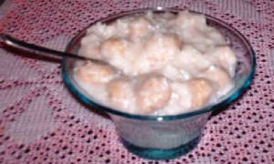

ATAKALI

DESCRIPTION
This dessert is made by using milk and contains small marble-sized balls made up of rice.
Ingredients
- Raw rice - 150 g
- Sugar - 75 g
- Scraped coconut - 1 cup
- Black pepper powder - Half teaspoon
- Salt according to taste
Steps
- Soak the rice in water for about an hour. After soaking, separate rice from water and allow it to dry.
- Grind the dried rice into fine powder.
- Take one and a half cup water in a container and heat it on medium flame.
- Add black pepper powder, salt and half the amount of scraped coconut into the water. Stir the mixture well.
- Slowly add half of the rice powder into the mixture while continuously stirring it on flame.
- Stop stirring when you obtain a thick dough. Turn off the flame and allow the dough to cool down.
- After the dough is cooled enough, make little balls of the dough.
- Add just enough water to the remaining rice powder so that a rice paste is formed.
- Take six cups of water in another container and heat it on medium flame.
- Add sugar, salt and remaining scraped coconut to the boiling water and stir it continuously to form syrup.
- Little by little, add the rice paste to the boiling syrup and continue stirring.
- Then add the dough balls into the syrup and stir the contents for 30 seconds on low flame.
- Turn off the flame. Let the contents cool down.
- Your Atakali dessert is ready to be served.